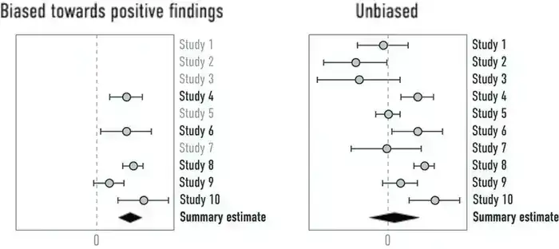

The bias
Positive results are more likely to be submitted, accepted and cited than null results. The consequence is that meta-analyses overestimate effects, and the classic demonstration is the funnel plot: small studies scatter asymmetrically when negative ones are missing.
Maps, diagrams and images


The corrections
Trial registries, registered reports and the requirement to report results regardless of outcome are documented responses, and the problem is well established in medicine, where unpublished trials have been shown to change conclusions.
Documented: the bias.
Documented: the funnel-plot evidence.
Documented: unpublished trials.
Partial: the corrections.
The label: documented.
Why it is in the archive
Because it explains why a published paper is not the same as a finding.
Open resources on this topic
- PapersOpen-access articles: DOAJ · PubMed Central · Internet Archive Scholar
- BooksPublic-domain and borrowable copies: Open Library · Project Gutenberg · Google Books · Internet Archive
Cite this page
Momin, S. (2026). Publication Bias. The Larger World Archive. https://drsamonline.github.io/LARGE_GLOBE/publication-bias.htmlMomin, Sohil. “Publication Bias.” The Larger World Archive, 2026, https://drsamonline.github.io/LARGE_GLOBE/publication-bias.html.Momin, Sohil. “Publication Bias.” The Larger World Archive, 2026. https://drsamonline.github.io/LARGE_GLOBE/publication-bias.html.@misc{publication2026publication,
author = {Momin, Sohil},
title = {Publication Bias},
year = {2026},
howpublished = {The Larger World Archive},
url = {https://drsamonline.github.io/LARGE_GLOBE/publication-bias.html},
note = {Last reviewed 20 November 2026}
}Last reviewed 20 November 2026 · Corrections policy · this page is not peer reviewed
How big the effect is
The bias is structural rather than dishonest: a study that finds nothing is harder to publish, harder to fund and less interesting to read, so the literature that exists is a filtered sample of the studies that were done. The filter has a direction, and the direction is toward positive results.
The size has been measured by comparing registered trials against published ones. In several fields the published effect sizes are inflated by a third or more relative to the registered outcomes, and the inflation is largest in the studies with the smallest samples — which is the signature of the bias rather than of the phenomenon.
Sources for this page
- Wikipedia, “Publication bias” — the biasen.wikipedia.org
- Wikipedia, “Funnel plot” — the diagnosticen.wikipedia.org
- Wikipedia, “Clinical trial registry” — a reformen.wikipedia.org
- Wikipedia, “Meta-analysis” — the affected methoden.wikipedia.org
- Archive.org — Publication Bias: the file-drawer problemarchive.org/details/arxiv-physics9909033